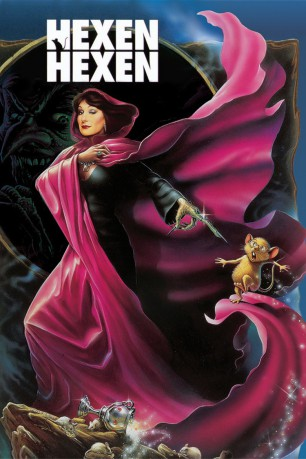

#7784 Hexen hexen
Alternativ: The Witches
 
 IMDB-Wertung: 6.8 / 10
IMDB-Wertung: 6.8 / 10  Metascore: 0
Metascore: 0 
Auf dem gleichnamigen Kinderbuch von Roald Dahl basierender britischer Kinderfilm aus dem Jahr 1990. Auf einer Hexenkonferenz stellt die Oberhexe Eva Ernst einen teuflischen Plan vor: in allen Candy Stores Englands soll Schokolade verkauft werden, die Kinder innerhalb von zwei Stunden in Mäuse verwandelt. Der neunjährige Luke und seine Oma Helga stellen sich den Hexen entgegen.
Jahr: 1990
Dauer: 91 Minuten
FSK: 6
Land: England Studio: Warner Bros.Tonspuren:
Untertitel: Deutsch,
Auflösung: 1080p (1920x1080) Größe: 9031 MB
Genre: Horror, Komödie, Abenteuer, Fantasy, Familie, Mystery
Regisseur: Nicolas Roeg
Drehbuch: Roald Dahl
Soundtrack: Stanley Myers
Darsteller:
 Anjelica Huston als Miss Eva Ernst / Grand High Witch
Anjelica Huston als Miss Eva Ernst / Grand High Witch- Mai Zetterling als Helga Eveshim
- Jasen Fisher als Luke Eveshim
 Rowan Atkinson als Mr. Stringer
Rowan Atkinson als Mr. Stringer Bill Paterson als Mr. Jenkins
Bill Paterson als Mr. Jenkins Brenda Blethyn als Mrs. Jenkins
Brenda Blethyn als Mrs. Jenkins- Charlie Potter als Bruno Jenkins
 Jane Horrocks als Miss Irvine
Jane Horrocks als Miss Irvine Anne Lambton als Woman in Black
Anne Lambton als Woman in Black- Jenny Runacre als Elsie
- Ann Tirard als Lady 1
 Jim Carter als Head Chef
Jim Carter als Head Chef- Roberta Taylor als Witch Chef
 Barbara Hicks als Old Witch at Meeting (uncredited)
Barbara Hicks als Old Witch at Meeting (uncredited) Michael Palin als Witch at Meeting (uncredited)
Michael Palin als Witch at Meeting (uncredited)- Sukie Smith als Marlene
- Rose English als Dora
- Annabel Brooks als Nicola
- Emma Relph als Millie
- Nora Connolly als Beatrice
- Rosamund Greenwood als Janice
- Angelique Rockas als Henrietta
- Leila Hoffman als Lady 2
- Brian Hawksley als Elderly Waiter
- Debra Gillett als Waitress
- Darcy Flynn als Luke's Mother
- Vincent Marzello als Luke's Father
- Serena Harragin als Doctor
- Grete Nordrå als Norwegian Witch
- Elsie Eide als Erica
- Kristin Steinsland als Child Helga
- Merete Armand als Erica's Mother
- Ola Otnes als Erica's Father
- Johan Sverre als Policeman
- Arvid Ones als Policeman
- Sverre Røssummoen als Policeman
- Toby Hinson als Afternoon Tea Waiter (uncredited)
- Wendy Lowder als Witch at Meeting (uncredited)
- Stella Tanner als Witch at Meeting (uncredited)
Datei: X:\1990\Hexen hexen (1990, FSK6, 1920x1080).mkv seit 19.12.2017
Festplatte: HD 1987-1991
 Es gibt insgesamt 52 Filme in der Gruppe '1990'
Es gibt insgesamt 52 Filme in der Gruppe '1990'